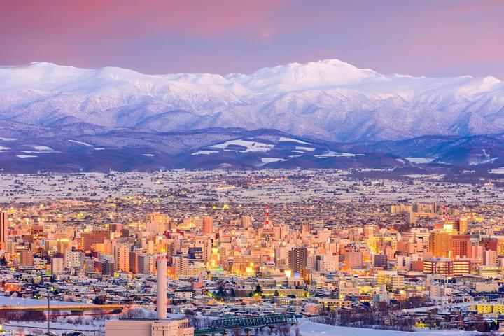
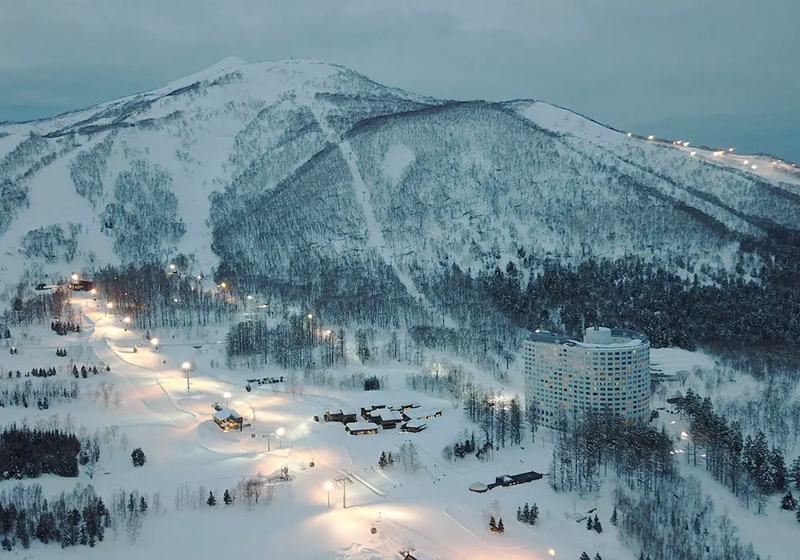
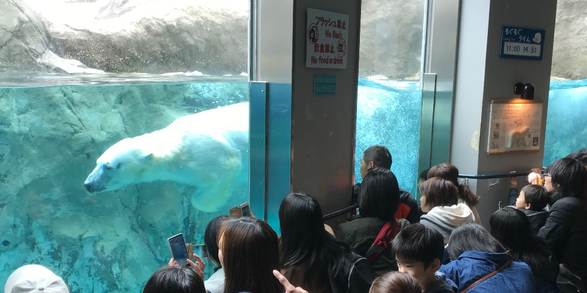
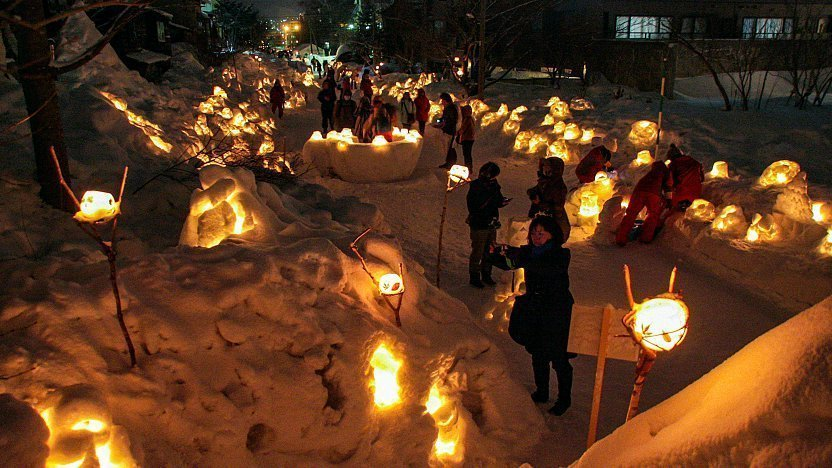
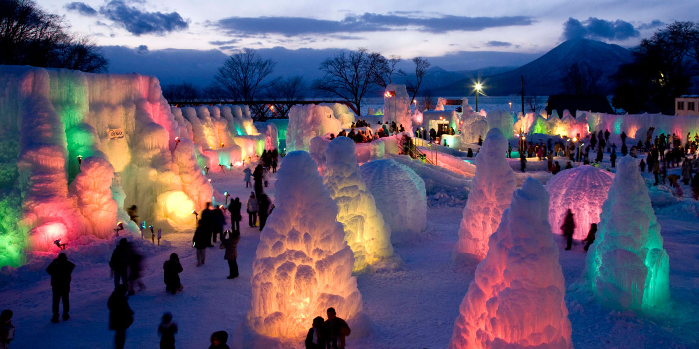

Welcome to Sapporo, the vibrant capital of Hokkaido and a must-visit destination in Japan! Known for its stunning natural beauty, rich cultural heritage, and delectable cuisine, Sapporo offers a unique blend of modern attractions and traditional charm. Whether you're exploring the iconic Sapporo Clock Tower, savoring the flavors of fresh seafood at the Nijo Market, or enjoying the picturesque scenery of Odori Park, Sapporo promises an unforgettable experience for every traveler. Join us as we delve into the heart of this dynamic city and discover all the wonders it has to offer.
The luminiscent city of Sapporo during the winter, overseen by the majestic Mt. Sapporo.
Picture taken by SUITCASE Magazine
In our opinion, Haokkaido in general is best visited during the peak of its winter wonder-y charm, so its best to get your tickets for September. Below we will be exploring the best attraction during Hokkaido's magical white glow
Hakkaido and its winter
- Sapporo snow festival
- Niseko Ski resort 
- Asahiyma zoo 
- Otaru Snow light Path Festival 
- Lake shikotsu ice festival 

Experience the enchantment of the Sapporo Snow Festival at night, where stunning ice and snow sculptures illuminate the city with their brilliance. Witness the artistry and creativity of beautiful figurines amidst a magical winter wonderland, with visitors enjoying the mesmerizing displays
Discover the winter paradise of Niseko Ski Resort, where pristine powder snow and world-class slopes attract enthusiasts from around the globe. From a breathtaking vantage point, witness the lively atmosphere and joy of skiers and snowboarders against the stunning backdrop of Niseko's majestic winter landscape
Immerse yourself in the wonders of Asahiyama Zoo, where close encounters with majestic creatures like polar bears captivate visitors of all ages. Watch as a curious polar bear swims gracefully behind the glass, and don't miss the famous penguin exhibits and other engaging animal attractions that make this zoo a winter favorite
Step into the magical ambiance of the Otaru Snow Light Path Festival, where a serene lakeside is transformed into a glowing winter wonderland. At night, festive stalls, charming houses, and twinkling lights create a picturesque scene that enchants visitors, making this festival a must-see winter event
Delight in the enchanting beauty of the Lake Shikotsu Ice Festival, where a sprawling field of snow and ice comes alive at night. Marvel at the illuminated snow sculptures, playful mounds of snow, and joyful visitors, all set against the stunning backdrop of Lake Shikotsu. A perfect blend of winter fun and breathtaking artistry awaits